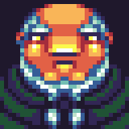

Rejoindre le monde d'Alex
90 mods déjà dans ton cache · 3 à recevoir (38 Mo)
Un mod inconnu va s'exécuter sur ton ordinateur
aeronautics-dev-0.3.jar
Ce mod n'est pas référencé sur Modrinth : Cubelink ne peut pas le comparer à une version connue. Il s'exécutera sur ton ordinateur avec les mêmes droits que le jeu.
Détails techniques
- Connexion directe avec Alex · 24 ms · Minecraft 1.21.1 · NeoForge 21.1.77 · Java 21
- Chaque fichier est comparé à l'empreinte annoncée par Alex. Cela garantit qu'il n'a pas été altéré en route, pas qu'il est sans danger. Un fichier qui ne correspond pas est supprimé. Empreinte utilisée : SHA-256.
- Un profil invité « Alex » est créé. Ton instance perso n'est pas modifiée.